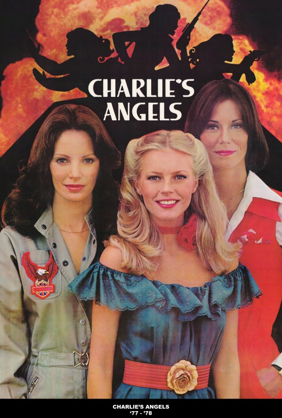

Сериалы семидесятых
Это время становится расцветом мыльных опер, различных ситкомов и других комедийных сериалов, обыгрывающих забавные жизненные ситуации. Особенной популярностью пользуются сериалы о жизни обычных семей.
Среди них стоит отметить такой сериал как «Джефферсоны».
«Джефферсоны» (англ. The Jeffersons) – длительный американский комедийный телесериал, который транслировался на канале CBS с 18 января 1975 года по 25 июня 1985 года. В центре сюжета находилась богатая семейная пара афроамериканцев Джордж и Луиза Джефферсоны (Шерман Хемсли и Изабель Санфорд), которая жила в Нью-Йорке.
«Джефферсоны» является спин-оффом ситкома «Все в семье», в котором впервые появились главные герои сериала. Просуществовав одиннадцать сезонов, сериал вошел в историю как самая продолжительная комедия на американском телевидении с полностью чёрным актёрским составом. На самом же деле проект является первым и одним из трёх успешных сериалов и истории телевидения с афроамериканцами в центре сюжета.
Сериал имел успех в телевизионных рейтингах на протяжении почти всего периода показа. Пик популярности пришелся на восьмой сезон, когда сериал занял третью строчку годовой рейтинговой таблицы, после «Далласа» и «60 минут». Также проект был отмечен рядом премий, включая четырнадцать номинаций и две победы на «Эмми», семь из которых принадлежат Изабель Санфорд в категории за лучшую женскую роль в комедийном телесериале. Санфорд стала первой и единственной чёрной актрисой, выигравшей «Эмми» в данной категории в истории. Кроме этого сериал восемь раз выдвигался на премию «Золотой глобус», пять из которых опять же были для Санфорд.
Одним из первых сериалов, где женщины появляются в традиционно мужских амплуа, становится «Ангелы Чарли». «Ангелы Чарли» (англ. Charlie's Angels) – телесериал-приключение о трёх женщинах, работающих на частное детективное агентство, одно из первых телешоу с женскими ролями традиционно мужского амплуа. Сериал транслировался в США компанией ABC с 1976 по 1981 годы и был одним из наиболее успешных в 1970-х годах. В нем три женщины, Ангелы, только что окончившие лосанджелесскую полицейскую академию, были назначены постовыми регулировщиками движения. Они уволились и были наняты на работу агентством Чарли Таусенда частными детективами. Их босс Чарли, лицо которого никогда полностью не показывается (в некоторых эпизодах зрителю виден затылок и руки), общается с сотрудниками по телефону, давая им задания через своего или через выносной динамик-интерком.
Сериал сделан не со сквозным последовательным сюжетом, а с эпизодическим – в каждом эпизоде Ангелы оказываются в новой ситуации, в которой они ведут расследование по раскрытию обстоятельств. Не раскрываемый фрагмент сюжетной линии притягивает интерес и создаёт напряжённость. В ранних эпизодах по ходу дела Ангелы использовали комбинации сексуальных уловок и знаний, тогда как в третьем и четвёртом сезонах сценарий отклоняется от внешней привлекательности героинь в сторону профессионализма в детективной работе.